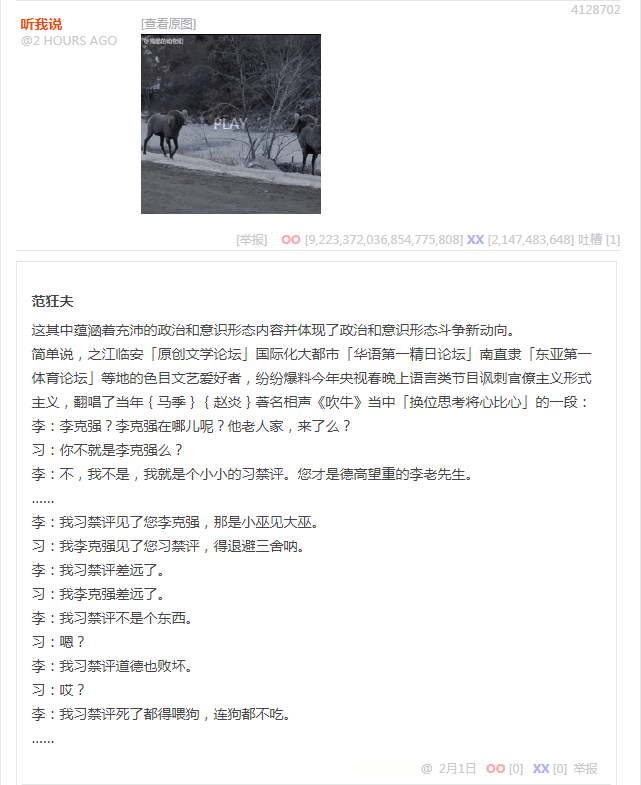
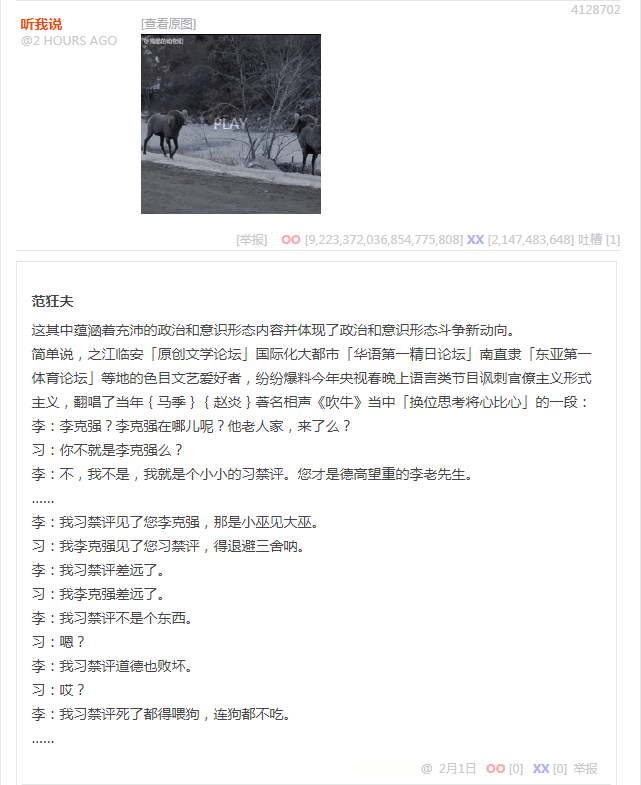
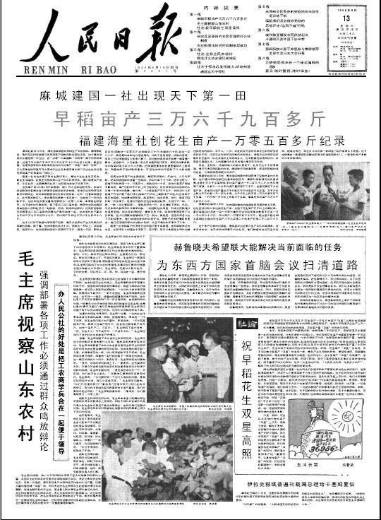

无聊图 4128702

无聊图 4128702

这其中蕴涵着充沛的政治和意识形态内容并体现了政治和意识形态斗争新动向。
简单说，之江临安「原创文学论坛」国际化大都市「华语第一精日论坛」南直隶「东亚第一体育论坛」等地的色目文艺爱好者，纷纷爆料今年央视春晚上语言类节目讽刺官僚主义形式主义，翻唱了当年马季赵炎著名相声《吹牛》当中「换位思考将心比心」的一段：
……
李：李克强？李克强在哪儿呢？他老人家，来了么？
习：你不就是李克强么？
李：不，我不是，我就是个小小的习禁评。您才是德高望重的李老先生。
……
李：我习禁评见了您李克强，那是小巫见大巫。
习：我李克强见了您习禁评，得退避三舍呐。
李：我习禁评差远了。
习：我李克强差远了。
李：我习禁评不是个东西。
习：嗯？
李：我习禁评道德也败坏。
习：哎？
李：我习禁评死了都得喂狗，连狗都不吃。
……
补充
众所周知，经典相声通常固定「大纲」，在现场通过对听众素质「大数据」进行「捅妓」，从而具体情况具体分析察言观色见风使舵填充「包袱」，因此普遍存在版本差异，有些时候连「宗旨」都变了。老迈年高的精神病仆街写手不入流码农数学渣我，年轻的时候听的是电台广播和录音带。
之江临安「原创文学论坛」活跃色目帐号兼娱乐至死の逗哔提供的是「凤凰网」收藏的真人演出视频：
马季赵炎演绎相声《吹牛》爆笑全场
开宗明义先批判，然后再展开。其中从「5′30″」到「7′10″」，就是「换位思考将心比心」的那一段。
而国际化大都市「华语第一精日论坛」和南直隶「远东第一体育论坛」活跃色目帐号兼娱乐至死の逗哔提供的则是党国钦定正统高音喇叭收藏的动漫版：
相声《吹牛》马季、赵炎，精彩回放
开头直接谈论「体育项目」，宗旨是「更快更高更强」「重要的在于参与」「电子竞技入夏季奥运会」「迎冬奥大力开展冰雪项目」之类。
而活学活用的九省通衢色目宣传工作者当然也会根据赞助商的指使进行针对性改编，某搜索引擎网页快照功能提供了一个九省通衢「军网最黄黄网最军」色目宣传工作者使用的早期版本：

人有多大胆，地有多大产
……
捧：主席同志，介亩产万斤也太能吹了。
逗：主席？主席在哪儿呢？主席他老人家，来了么？
捧：你不就是主席么？
逗：不，我不是，我就是个小小的总理。您才是德高望重的主席同志。
……
逗：我总理见了您主席，那是小巫见大巫。
捧：我主席见了您总理，得退避三舍呐。
逗：我总理不行。
捧：我主席不行。
逗：我总理不是个东西。
捧：嗯？
逗：我总理道德也败坏。
捧：哎？
逗：我总理死了都得喂狗，连狗都不吃。
……